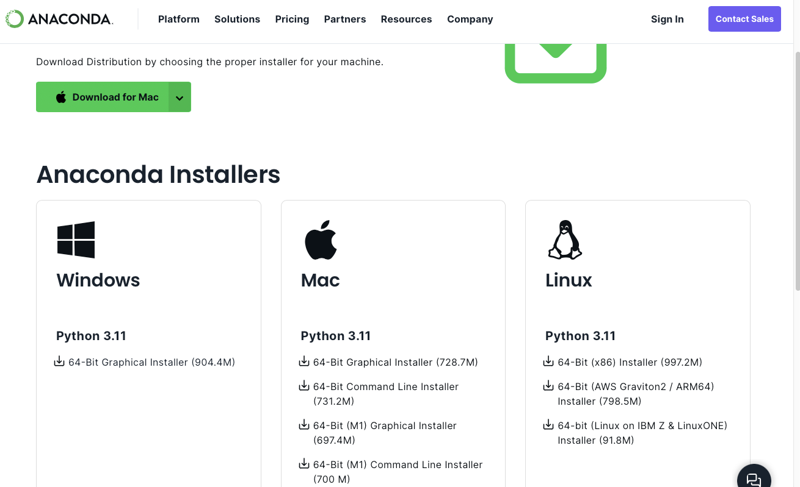
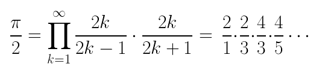

Python: introduction
Auteur: David Thébault
Introduction au langage Python
L’objectif de cette section est de:
Découvrir l’environnement de développement en Python pour la Data Science.
Se familiariser avec le language Python en ayant pris en main Jupyter Notebook
Parmi les sources ayant contribué à l’élaboration de cette section citons:
Scipy lecture notes “Getting started with Python for science”
Algorithmique et programmation en Python de Jean-Baptiste Civet et Boris Hanus.
Python pour le Data Scientist d’Emmanuel Jakobowicz.
Ce document alternera une rédaction français et en anglais. We apologize for the inconvenience.
Python: qu’est ce que c’est ?
Python est un langage de programmation créé en 1991 par Guido van Rossum: “J’ai choisi Python comme nom pour ce projet car j’étais dans une humeur plutôt provocatrice et aussi car j’adore le Monty Python’s flying Circus”. Python est un langage de programmation interprété (par opposition au langage “compilé”) cela signifie qu’un exécutable autonome n’est pas produit. Une fois le code rédigé, il est nécessaire d’avoir en permanence un interpréteur Python à disposition.
Langage Interprété (en savoir plus): Python est un langage interprété, c’est à dire qu’il se compose d’un langage et d’un interpréteur. La principale différence avec les langages compilés est que la suite des instructions qui va être exécutée par le programme n’est pas connue quand celui-ci est lancé. Seules les différentes règles qui peuvent être appliquées sont connues. Le langage de programmation définit cet ensemble de régles et c’est ce que l’on appelle communément le langage Python (c’est ce qu’on va apprendre ici!). Il existe ensuite différents interpréteurs qui prennent ces instructions pour modifier l’état interne (comprendre les variables) du programme:
CPython: l’interpréteur standard de Python. Écrit en C, c’est l’interpreteur de base que vous utiliserez le plus souvent.
Jython: un interpréteur écrit en Java qui permet une interaction simple avec du code Java.
IronPython: un interpréteur intégré avec le FRamework .Net (travail dans le navigateur).
microPython: un interpréteur dédié au calcul embarqué, avec une optimisation drastique de la mémoire.
C’est un langage libre (open source), développé par une large communauté d’utilisateurs. Il est multi-plates-formes. Ainsi, le script peut être écrit sur un type de machine et utilisé sur un autre.
Le langage python possède ses mots réservés et impose une manière de présenter le code. Cette présentation du code python, notamment par indentation, permet visuellement d’identifier les différents éléments de langage comme les structures de boucles ou de conditions.
propriétés (les caractéristiques de l’objet) et des méthodes (ce sont des fonctions qui s’appliquent sur l’objet). En Python tout est objet: les variables, les fonctions et toutes structures sont des Python Object. Cela permet une grande souplesse.Python est un langage de haut niveau est langage qui se rapproche le plus possible du langage naturel, c’est à dire qu’il se lit “comme il s’applique”.
Python facilite le travail du programmateur en encapsulant un certain nombre de méthodes liées par exemple à un type de structure de données. Par exemple, quand on créé une liste (nous verrons comment plus tard), Python met automatiquement à disposition des instructions pour modifier les données. Il s’agit de méthodes supplémentaires et non de fonctions.
Python permet ainsi de limiter l’utilisation de variables intermédiaires et la compréhension du code pour ses utilisateurs n’en est que facilitée. Cela est davantage renforcé avec l’utilisation de fonctions que nous verrons par la suite et qui permettent de passer des valeurs en entrée et d’en récupérer en sortie. Cela allège considérablement la rédaction du code sans compliqué la compréhension.
Le succès de Python en chiffres!
Enquête JetBrains 2023 Menée auprès de 26 348 développeurs du monde entier et a recueilli des données sur une variété de sujets, notamment les langages de programmation, les outils de développement, les frameworks, les technologies émergentes et les tendances du développement logiciel. https://www.jetbrains.com/lp/devecosystem-2023/
Article publié le 9 novembre 2020 par Vincent Poulailleau https://www.lecalamar.fr/posts/2020-11-09-python-le-deuxieme-langage-le-plus-utilise/
Pour résumer, le succès de Python tient particulièrement en quatre points:
Simplicité et flexibilité: le langage est simple à comprendre (à lire) et la librairie standard propose de nombreuses fonctionalités par défault.
Des librairies spécialisées: Il existe une multitude de modules spécialisés, que l’on peut voir comme des extensions du langage Python pour réaliser certaines tâches:
Django: framwork de developpement web.Numpy: Numerical Python, librairie d’algébre linéaire.Tensorflow/Pytorch: librairie dédiée aux Réseaux de Neurones.PyTest: librairie liée au test unitaire en python.
Ces librairies sont réunies dans 2 principaux gestionnaires de packets:
pipetconda, tout commeCRANréunit les librairiesRdisponibles.Une facilité d’extension: Il est en général assez simple d’utiliser/d’appeler un autre langage dans un programme Python, par exemple
Ravecrpy2.Un langage interprété: Tout comme
R, c’est un langage qui permet le developpement interactif.
En cela, Python et R sont très proches et les concepts de l’un sont facilement transposable à l’autre, mais contrairement à R, Python est entièrement conçu en langage objet.
L’environnement de développement en Python
Anaconda
Description
Anaconda est une distribution Python qui inclut de nombreux packages python pour la programmation scientifique. C’est une façon pratique pour installer et mettre en place son environnement de travail sous n’importe quel système d’exploitation.
Anaconda contient divers outils utiles pour Python. Nous nous servirons de:
Anaconda Navigator: Interface graphique pour lancer les différents programmes de Anaconda et installer des librairies supplémentaires.Anaconda Prompt: Console pour faire de même en ligne de commande.Jupyter Notebook: Interface graphique dans le navitageur web pour écrire et exécuter du codePython. Ce système de développement est basé sur deux outils: - un navigateur web dans lequel vous verrez votre code s’afficher et dans lequel vous développerez et soumettrez votre code - un noyau Python qui tourne dans un terminal (à laisser ouvert!) sur votre machine. Il vous permettra de soumettre le code entré dans le notebook. D’un point de vue technique, le notebook est stocké sous forme d’un fichier du type JSON avec une extension *.ipynb provenant de l’ancien nom IPython notebook. Le nom Jupyter vient de la combinaison des 3 programmes: Julia, Python et R.Spyder: Un éditeur intégré, similaire àRstudioouMatlab.
Lancez Anaconda Navigator (en cherchant dans la barre de recherche de programmes si nécéssaire) et vérifiez que vous arrivez à ouvrir un notebook jupyter, comme indiqué ici. Vous pouvez aussi taper dans une fenêtre de commande anaconda-navigator.
Installation
Pour l’installer:
Aller sur le site d’anaconda: Downloads. Pas besoin de s’enregistrer.

Télécharger la version Graphic Installer
Python 3.11adaptée à votre ordinateur (OS et architecture).Une fois le setup téléchargé, l’exécuter et accepter tous les paramètres par défaut.
Désinstallation (sous Mac OS)
Pour désinstaller Anaconda3
installer anaconda clean:
conda install anaconda-cleanlancer le nettoyage d’Anaconda:
anaconda-clean --yessupprimer le répertoire Anaconda3:
sudo rm -rf /opt/anaconda3supprimer l’application Anaconda.app: aller dans les applications via Finder puis supprimer
désinstaller anaconda-clean:
conda uninstall anaconda-clean
Google colab
Description
Google Colab (Google Colaboratory), est un environnement de notebook Jupyter basé sur le cloud, hébergé par Google. Il permet aux utilisateurs d’exécuter du code Python dans le navigateur, sans avoir à installer de logiciel.
Installation
Pour accéder à Google Colab, il suffit de disposer d’un compte Google et de se rendre sur l’URL Google Colaboratory et de se connecter à son compte Google si vous n’êtes pas déjà connecté.
VS Code
Description
VS Code est un éditeur de code gratuit et open source développé par Microsoft. Il est disponible sur Windows, macOS et Linux et prend en charge un large éventail de langages de programmation, notamment Python, Java, JavaScript, C++, C#, PHP, etc.
Installation
Pour installer VS Code, rendez-vous sur le site web de VS Code et téléchargez le programme d’installation correspondant à votre système d’exploitation.
Jupyter Notebook avec VS Code
Pour travailler sur Jupyter Notebook avec VS Code, installez l’extension Jupyter Notebook. Pour cela, ouvrez VS Code et recherchez l’extension Jupyter Notebook dans la barre de recherche. Une fois l’extension trouvée, cliquez sur Installer. L’extension Jupyter Notebook fournit un certain nombre de fonctionnalités pour travailler sur Jupyter Notebook, notamment :
Une coloration syntaxique pour le code Python
Une complétion automatique intelligente pour le code Python
Un débogueur intégré pour le code Python
La possibilité de lancer des cellules Jupyter dans un terminal
Une fois l’extension installée, vous pouvez ouvrir un fichier Jupyter Notebook en double-cliquant dessus ou en le sélectionnant dans l’explorateur de fichiers. VS Code ouvrira le fichier dans un nouvel onglet.
Voici quelques extensions à installer avec VS Code pour travailler sur Python Jupyter Notebook :
Jupyter: fournit une prise en charge native des notebooks Jupyter dans VS Code.Python Extension Pack: regroupe plusieurs extensions utiles pour le développement Python, notamment Python, Python Docstring Generator, Jupyter Keymap (pour utiliser les raccourcis clavier de Jupyter Notebook) et Jupyter Notebook Renderers (pour les types MIME tels que latex, plotly, vega, etc.).
IPython
IPython est un terminal interactif pour le langage de programmation Python. Source Wikipedia. Il est très pratique pour tester des algorithmes, explorer des données,… Documentation ici.
Ces principaux avantages sont: la complétion automatique avec la tabulation, l’accès aux aides, les commandes magiques %, l’historique des entrées, la mise en mémoire des sorties.
La commande magique IPython %quickref permet d’afficher rapidement une référence des commandes magiques IPython courantes et leurs descriptions.
Installation
Installé avec Anaconda3, il ne nécessite pas d’installation particulière. S’il n’est pas installé par défaut, lancer la commande shell: conda install ipython
Écrire du code en python
La plupart des éditeurs de texte pour la programmation fournissent au moins un support rudimentaire pour Python. Deux autres options populaires sont VSCode et vim.
Avec Anaconda est fourni entre autres Spyder, qui est une environnement de développement intéractif puissant, incluant notamment un éditeur mais aussi une console.
Comment exécuter du code?
Python, exécution d’un script entier:
$ python script.py.IPython: shell interactif Python.
$ ipythonJupyter notebook
%run script.py. Pour exécuter une celluleMaj+EnterouCtrl+MajDans un IDE tel que Spyder: ouvrir le fichier script.py avec Spyder et cliquer sur le bouton Run ou sur F5.
Ce fichier est un exemple de notebook jupyter. Son extension est ``.ipynb``.
Jupyter Notebook prise en main
Note: lien utile pour utiliser Jupyter notebook dans un environnement virtuel.
Types de cellules
Les deux principaux types de cellule que nous utiliserons:
Les cellules Markdown de texte
Les cellules de Code de programmation précédée par
[ ]:Surligné(texte surligné avec la touche Backtick)
Il suffit de Double cliquer pour activer une cellule.
Raccourcis clavier
https://jupyter-tutorial.readthedocs.io/en/24.1.0/notebook/shortcuts.html See also the information in the menu bar, Edition
ESC + m : Change the mode of the cell from code to markdown
ESC + y : Switch the cell from code to markdown
ESC + a: Insert a cell above
ESC + b: insert a cell below
ESC + dd: delete a cell
Ctrl+ Enter : Execute the current cell and selection the next one.
Shift+Enter : Execute the current cell and insert a new empty cell just below if code is ending or pass to the next cell either
Ctrl+A : Sélectionne tout le texte de la cellule courante.
Ctrl+Z : Annule la dernière action.
Ctrl+/ : Pour mettre en commentaire ou décommenter une ligne (attention le ‘/’ est celui du pavé numérique)
Mise en page
To modify the title of your Jupyter Notebook double-click in the upper rubber
Pour mettre du texte dans une cellule de code, précédé le texte de # (la ligne restera ignoré par l’interpréteur)
Dans une cellule de texte on peut créer des titres, des sous-titres ou des sections:
Pour écrire un titre commencez la ligne par # Nom du titre
Pour écrire un sous-titre commencez la ligne par ## Nom du sous-titre
Pour écrire un sous-section commencez la ligne par ### Nom de la sous-section NB: n’oubliez pas de placer un espace entre # et le nom du titre, du sous-titre, de la sous-section.
test
test
Test
Ingrédients
Des œufs
De la farine
Du lait
Du sucre
[STRIKEOUT:De l’huile de coude]
N’hésitez pas à faire moitié-moitié avec du sucre vanillé pour plus de goût !
Tableau des quantités
œufs |
farine |
lait |
sucre |
|---|---|---|---|
3 |
300g |
60cl |
20g |
Ceci est une phrase. Ceci n’est pas une nouvelle phrase.
Ceci est une phrase.Ceci est une nouvelle phrase.
Rédiger des formules mathématiques:
$ f(x) = x^2 $
$ \left`( :nbsphinx-math:sum`{k=1}^n a_k b_k :nbsphinx-math:`right`) ^2 :nbsphinx-math:`leq `:nbsphinx-math:`left`( :nbsphinx-math:`sum`{k=1}^n a_k^2 \right) \left`( :nbsphinx-math:sum`_{k=1}^n b_k^2 \right) $
\begin{equation*} \left( \sum_{k=1}^n a_k b_k \right)^2 \leq \left( \sum_{k=1}^n a_k^2 \right) \left( \sum_{k=1}^n b_k^2 \right) \end{equation*}
Créer une boîte d’alerte de succès
Félicitations ! Votre code a fonctionné.
Créer une boîte d’alerte d’alerte
Titre de la boîte d’alerte
Texte de la boîte d’alerte
Créer une boîte d’alerte d’information
REMEMBER:
When you have an operation…
A typical use case
Mise en page
To modify the title of your Jupyter Notebook double-click in the upper rubber
Pour mettre du texte dans une cellule de code, précédé le texte de # (la ligne restera ignoré par l’interpréteur)
Dans une cellule de texte on peut créer des titres, des sous-titres ou des sections:
Pour écrire un titre commencez la ligne par # Nom du titre
Pour écrire un sous-titre commencez la ligne par ## Nom du sous-titre
Pour écrire un sous-section commencez la ligne par ### Nom de la sous-section NB: n’oubliez pas de placer un espace entre # et le nom du titre, du sous-titre, de la sous-section.
test
test
Test
Ingrédients
Des œufs
De la farine
Du lait
Du sucre
[STRIKEOUT:De l’huile de coude]
N’hésitez pas à faire moitié-moitié avec du sucre vanillé pour plus de goût !
Tableau des quantités
œufs |
farine |
lait |
sucre |
|---|---|---|---|
3 |
300g |
60cl |
20g |
Ceci est une phrase. Ceci n’est pas une nouvelle phrase.
Ceci est une phrase.Ceci est une nouvelle phrase.
Rédiger des formules mathématiques:
$ f(x) = x^2 $
$ \left`( :nbsphinx-math:sum`{k=1}^n a_k b_k :nbsphinx-math:`right`) ^2 :nbsphinx-math:`leq `:nbsphinx-math:`left`( :nbsphinx-math:`sum`{k=1}^n a_k^2 \right) \left`( :nbsphinx-math:sum`_{k=1}^n b_k^2 \right) $
\begin{equation*} \left( \sum_{k=1}^n a_k b_k \right)^2 \leq \left( \sum_{k=1}^n a_k^2 \right) \left( \sum_{k=1}^n b_k^2 \right) \end{equation*}
Créer une boîte d’alerte de succès
Félicitations ! Votre code a fonctionné.
Créer une boîte d’alerte d’alerte
Titre de la boîte d’alerte
Texte de la boîte d’alerte
Créer une boîte d’alerte d’information
REMEMBER:
When you have an operation…
A typical use case
Install a Table of contents
!pip install Nbextensions
click on the icone Content in the bar menu
[6]:
!conda install Nbconvert
Channels:
- conda-forge
- defaults
Platform: osx-arm64
Collecting package metadata (repodata.json): done
Solving environment: done
# All requested packages already installed.
[2]:
# 2 lines below for HTML export
# import plotly.io as pio
# pio.renderers.default = "notebook"
[347]:
# 2 lines below for PDF export
# !conda install Pyppeteer
# !pyppeteer.install
Exporter ou sauvegarder son notebook sous différentes formes
Programmer en Python
Les bases du langage Python
Commençons par préciser comment accéder à la documentation
manuel de référence: structure et sémantique interne
bibliothèque standard: sémantique des objets natifs secondaires, des fonctions, et des modules
commande en ligne :
help('commande')oucommande?
Premiers codes Python
[11]:
# Afficher Bonjour
#print('Bonjour')
Aide sur les fonctions
[210]:
# To have information about the print() function:
#print?
[211]:
# Other way to get information on the print function:
# help(print)
[212]:
# Execute a bash command in a jupyter cell:
#!ls
[213]:
# %quickref: quick reference guide to commonly used magic commands and their descriptions
#%quickref
[10]:
# Simple addition
#1 + 2 + 3
[216]:
# Aide sur l'object sum
#help(sum)
[13]:
sum([1, 2, 3])
L'affectation
[14]:
x = 5
x
[117]:
# Information about x
x?
[120]:
# b = 9/4
# type(b)
[118]:
# c = "bonjour"
# type(c)
[16]:
# %whos: Display information about the variables and objects currently defined in the notebook's global scope
#%whos
[17]:
# Equivalent whos
#whos?
[1]:
# Get information about the variables in memory
#whos
[19]:
# timeit: execution time
#%timeit?
[4]:
# Execution time to have the result of 10 + 11
#%timeit 10 + 11
[1]:
# Write a file in a jupyter notebook cell:
# %%writefile?
[20]:
# Below, write the content of the cell into a file called test.py
# Note: we cannot write these lines of comment into the cell of %%writefile
Gestion des exceptions
Structure try-except de python permet de tenter une exécution et de continuer si elle échoue
[21]:
#try:
# os.remove(test.py)
#except:
# pass
Structure try-except (suite)
[363]:
# def rapport(x, y):
# """Fonction rapport() permet de faire une division
# PARAMETRES:
# x, y: deux nombres réels.
# RETURNS:
# resultat: nombre réel
# """
# try:
# resultat = x / y
# except ZeroDivisionError:
# print('Division par zéro')
# else:
# print("Le résultat est {}".format(resultat, "%.2f"))
# finally:
# print('Le calcul est terminé')
[364]:
# rapport?
[365]:
# rapport(1, 2)
[366]:
# rapport(1, 0)
[22]:
#%%writefile test.py
#print("Bonjour du fichier test.py")
[23]:
# Display the content of the python file test.py
#!cat test.py
[24]:
# Execute a python code into a jupyter notebook cell:
#%run test.py
[25]:
# Les bases du langage Python
#import this
Tim Peters : [source: wikipedia], Traduction DeepL
Le guide de style PEP8
Python Enhancement Proposal 8 `Pep8 <https://pep8.org/>`__ définit les conventions de codage, les directives et les meilleures pratique pour écrire du code Python.
Si vous collaborez avec d’autres personnes en Python, essayer de suivre ses conventions permet d’avoir une homogénéité.
Règles indicatives: Python étant sensible à la casse, des conventions de nommage basées sur l’utilisation de majuscules et de miniscules existent:
les fonctions sont toujours nommées en minuscule avec des _ si besoin
les classes s’écrivent sans séparateurs avec une majuscule à la première lettre de chaque mot la composant
les packages s’écrivent en miniscules, is possible sans séparateur (éventuellement _)
Ces règles ne sont qu’indicatives. Si elles n’ont pas été respectées dans un projet l’important est de rester cohérent avec ce projet pour garder un code lisible.
La fonction print()
La fonction print permet d’afficher l’expression qu’elle contient.
[26]:
#print("Hello world!")
[1]:
# print(1)
# 2 + 2
# print(2)
# 1 + 1
Les types de bases
Les constantes de Python
Il existe différentes valeurs de base dans python. Les plus communes sont
None: une valeure vide (vu plus tard).False/True: Les constantes booléennes.Les entiers:
0, 1, -2, ... Ils peuvent aussi s’écrire sous forme binaire0b1111ou hexadécimale0xf.Les floatants:
0.0, 1.0, -1.234, .... Ils peucvent aussi s’ecrire sous la forme scientifique1e-4, 3.4e-12,....Les charactères:
a, b, c, d, ....
booléens
[4]:
True
[4]:
False
Les entiers
[137]:
# 4
[138]:
# 15, 0b1111, 0xf
``floats`` nombres à virgule
[139]:
# 0.023, 2.3e-2
L’écriture des int et de tous les floats en général est une écriture décimale
Les types numériques
[22]:
type(5)
[22]:
int
[23]:
type(-1)
[23]:
int
[24]:
type(-4.6)
[24]:
float
[142]:
# c = 2.2 + 0.8j
# print(c.real)
# print(c.imag)
# type(c)
Conversion d’un type
On peut effectuer des conversions d’un type en un autre type.
int()
[222]:
# To convert a float type variable into a int type
[25]:
type(7.2)
[25]:
float
[26]:
int(7.2)
[26]:
7
[28]:
type('20')
[28]:
str
[29]:
int('20')
[29]:
20
[30]:
type(int('20'))
[30]:
int
float()
[225]:
# To convert a int type variable into a float type
[226]:
float(b)
Les opérateurs
Les opérateurs arithmétiques
Les opérations arithmétiques de base +, -, *, /, % (modulo) sont implémentées nativement.
[11]:
print(24 * 4)
print(2 ** 10)
print(12 % 5)
[ ]:
# définir certaines variables et les afficher
a = 1
a = a + 5
print(a)
[12]:
# Sous Python nous pouvons écrire la même opération sous la forme:
a = 1
a += 5
print(a)
[13]:
# # division entière // sans reste
11 // 2
Les opérateurs logiques
Opérateur |
Description |
|---|---|
not |
c’est le NON logique |
and (& cas binaire) |
c’est le ET logique |
or |
c’’est le OU logique |
^ dans le cas binaire |
c’est le OU EXCLUSIF |
[1]:
# Logique
# AND
print(False & True)
# OR
print(False | True)
# XOR ou exclusif
print(False ^ True)
False
True
True
Les opérateurs de comparaisons
Opérateur |
Objectif |
|---|---|
is |
Tester si les objets sont les mêmes. a is b renvoie True si a et b sont les mêmes objets, False sinon |
is not |
Test si les objets sont différents a is not b |
== |
Test l’égalité entre deux valeurs True == 1 est vrai |
!= |
Test la Différence entre deux valeurs |
< ou > |
Test si plus petit ou plus grand 1<2 retourne True |
<= ou >= |
Test si plus petit ou égal 1 <= 1 retourne True |
[234]:
True == 1
[235]:
True > False
[126]:
# Comparaison pour créer des booléens:
# Affectation:
a = 5
# Est-ce que a vaut 5 ?
a == 5
[136]:
# Est-ce que a est plus grand ou égal à 6 ?
a >= 6
[1]:
x = 1
y = 2.5
x, y = 1, 2.5 # pour écrire sur une seule ligne
# Comparaison
print(x <= y) # True (booléen)
print(x == y) # False
print(x != y) # True
True
False
True
[ ]:
d = 4 != 6
print(d)
type(d)
Les cellules en cours d’exécution avec Python 3.13.2 nécessitent le package ipykernel.
<a href='command:jupyter.createPythonEnvAndSelectController'>Créer un environnement Python</a> avec les packages requis.
Ou installez « ipykernel » en utilisant la commande : « /opt/homebrew/bin/python3 -m pip install ipykernel -U --user --force-reinstall »
Les séquences
Les tuples
[14]:
# Define a tuple named t containing three elements:
# t = ('blabla', 2, 'blibli')
[15]:
# t
[16]:
# Indexing: Première valeur du tuple:
# t[0]
[1]:
# Tentons de modifier cette première valeur:
# t[0] = 'abc'
Un tuple est un objet immutable sa structure ne peut être modifiée
[6]:
# Let's define a new tuple u. Parenthesis are not mandatory:
# u = 'blabla', 2, 'blibli'
[7]:
# u
[8]:
# s1, v1, s2, a = u
# print(s1)
# print(v1)
tuple comprehension
[4]:
tuple_1 = (x**2 for x in range(10))
# erreur ce n'est pas un objet tuple mais un objet generator. Il faut utiliser la fonction tuple
tuple_1
[4]:
<generator object <genexpr> at 0x10d81cad0>
[5]:
tuple_1 = tuple((x**2 for x in range(10)))
# et là on a bien créé (0,1,4,9,16,25,36,49,64,81)
tuple_1
[5]:
(0, 1, 4, 9, 16, 25, 36, 49, 64, 81)
count() exemple de méthode d’un tuple
[9]:
u.count('blabla')
Les listes
[21]:
# Ecrire une liste contenant les jours de la semaine:
semaine = ['lundi', 'mardi', 'mercredi', 'jeudi', 'vendredi']
[22]:
type(semaine)
list indexing
[23]:
semaine[0]
[24]:
semaine[-1]
[25]:
semaine[-4]
Slicing.
Le slicing fait référence à la syntaxe ``semaine[start:stop:stride]``
Tous les paramètres du slicing sont optionnels. Ils permettent d’extraire une partie de la liste.
start et stop définissent les limites de la plage d’éléments qui seront retournés.
start définit l’indice du premier élément qui sera retourné. Si “start” est négatif, il est compté à partir de la fin de la liste.
stop définit l’indice à partir duquel les éléments ne seront plus inclus dans la sélection. S’il est positif vous pouvez aussi le voir comme le nombre d’éléments que vous souhaitez sélectionner. Si “stop” est négatif, il est compté à partir de la fin de la liste.
stride signifie “pas”. Il définit l’intervalle entre les éléments de la liste qui seront retournés.
NB: si start est supérieur ou égal à “stop”, la liste vide sera retournée.
Note: L’objet 1:-1 est en fait une slice.
[26]:
# Définition de la liste semaine:
semaine = ['lundi','mardi','mercredi','jeudi','vendredi','samedi','dimanche']
[27]:
# Sélectionnez le premier et le dernier élément de la liste:
semaine[0], semaine[-1]
[28]:
a = semaine[0], semaine[-1]
[29]:
# Quel et le type de a ?
type(a)
[30]:
semaine[2::]
[31]:
# Sélectinnez les trois premiers éléments de la liste:
semaine[0:3]
[169]:
# Nous remarquons que le dernier élément n'est pas sélectionné
[49]:
# Sélectionnez les 3 premiers éléments avec un pas de 2:
semaine[0:3:2]
[32]:
# Sélectionnez de mardi à samedi:
semaine[1:-1]
[33]:
# Sélectionnez tous les jours sauf ceux du week-end:
semaine[:-2]
[34]:
# Sélectionnez les jours du week-end:
semaine[-2:]
[35]:
semaine[0]
[36]:
# Sélectionnez la semaine en sens inverse
semaine[::-1]
On va du début : à la fin : en reculant pas = -1. Parcours toute la liste depuis la fin vers le début avec un pas de -1
[37]:
# Sélectionnez un element sur deux:
semaine[::2]
[38]:
# On peut slicer sur une chaîne de caractère:
semaine[0][1::3]
Les éléments d’une liste peuvent avoir des types différents.
[39]:
liste = ['samedi', 23, 0.1 , None, True]
[40]:
liste
``+`` pour concaténer des listes.
[41]:
# Ecrire une liste contenant les jours de la semaine sauf "Dimanche".
# Puis écrire une liste jour contenant "Dimanche"
# Concater les deux listes à l'aide du symbole "+"
liste = ['lundi', 'mardi', 'mercredi', 'jeudi', 'vendredi', 'samedi']
jour = ['dimanche']
[42]:
liste
[43]:
jour
[44]:
liste + jour
[45]:
semaine = liste + jour
semaine
[46]:
# Les éléments d'une liste sont modifiables (contrairement à ceux d'un tuple):
semaine[0] = 0
[47]:
semaine
``Trier`` une liste par alphabétique avec la fonction sorted()
[48]:
semaine = ['lundi','mardi','mercredi','jeudi','vendredi','samedi','dimanche']
sorted(semaine)
Exercice:
Créer une liste annee avec les 12 mois de l’annee
Faire afficher sur la même ligne juin et décembre
Quel est le type de l’objet correspondant? On pourra vérifier la réponse avec type
Avec des commandes de sélection les plus simples possibles, faire afficher les mois d’été (juin, juil., août), puis les mois d’hiver (jan., fév., mars)
Renverser la liste annee avec le fancy indexing?
Prendre 1 lettre sur 3 de janvier à partir de la lettre a
SOLUTIONS !!!
[170]:
# Créer la liste annee:
annee = ['janvier','février','mars','avril','mai','juin','juillet','août','septembre','octobre','novembre','décembre']
[171]:
# Indexing: afficher juin (5ème position) et décembre (dernière position):
annee[5], annee[-1]
[172]:
# Quel est le type de l'objet ?
t = annee[5], annee[-1]
type(t)
[173]:
# Slicing: afficher les mois d'été (juin, juillet, août) :
annee[5:8:1]
[174]:
# Slicing: afficher les mois d'hiver (janvier, février, mars) :
annee[0:3:1]
La différence principale entre une méthode et une fonction est donc la suivante : Les méthodes sont définies à l’intérieur d’une classe. Les fonctions, quant à elles, peuvent être définies n’importe où dans un programme Python et donc être appleées de manière indépendante.
La notation semaine.method() (comme semaine.append(), semaine.sort()) est un exemple de la programmation orientée objet. Comme semaine est une list, elle a la méthode xxx appelée avec la notation ..
Pour découvrir les méthodes disponibles, on peut utiliser la tab-completion:
.append(value) ajoute une valeur à la fin de la liste
[175]:
# to add an element at the end of the list
[176]:
# semaine.append('lundi')
# print(semaine)
[177]:
# l = [17, 15, 8, 4, 2]
# l.append(6)
# l
.insert(i, value) insert une valeur à l’indice i
[178]:
# to add a value at a certain index of the list
# l.insert(2, 100)
# l
.remove(value) supprime la valeur d’une liste
[179]:
# to add a value at a certain index of the list
# l.remove(100)
# l
.pop(i) extrait la valeur de l’indice i
[180]:
# to delete an element of the list thanks to its index
# semaine.pop(0)
# print(semaine)
.extend() étend la liste grâce à une liste de valeurs
[181]:
# extend to add a new list to our list
# semaine.extend(['samedi', 'dimanche'])
# print(semaine)
.reverse() inverse la liste
[182]:
# annee.reverse()
# print(annee)
.sort() tri une liste par ordre ascendant
[183]:
# # To sort in an alphabetic order:
# semaine = ['lundi', 'mardi', 'mercredi', 'jeudi', 'vendredi', 'samedi', 'dimanche']
# print('Semaine normale: ', semaine)
# semaine.sort() # sort by alphabetic order
# print('Semaine triée par ordre alphabétique: ', semaine)
[184]:
# # Tri par ordre anti-alphabétique:
# semaine.sort(reverse=True)
# print(semaine)
[185]:
# To sort l ascending only (croissant) and affect to l:
# l = [17, 60, 8, 4, 2, 6]
# l.sort()
# l
sorted()
[186]:
# To sort l ascending only (croissant) but WITHOUT affecting to l:
# l = [17, 60, 8, 4, 2, 6]
# sorted(l)
[187]:
# l
.index(valeur) renvoie l’indice de la valeur val
[188]:
# annee.index('mars')
.remove(valeur) retire la première occurrence de la valeur val de la liste
[189]:
# l = [17, 60, 8, 4, 2, 60, 5]
# l.remove(60)
# l
.count(valeur) renvoie le nombre d’occurences de valeur
[190]:
# Pour compter le nombre de fois qu'un élément apparaît dans une liste:
# semaine.count?
[191]:
# Comptez le nombre de lundi:
# semaine.count('lundi')
in pour savoir si une valeur est dans la liste
[192]:
# Est-ce que lundi est un élément de la liste:
# 'lundi' in semaine
len(liste)
[193]:
# Pour compter le nombre d'éléments d'une liste:
# len(semaine)
List comprehension une façon “pythonesque” de générer une liste
[194]:
# Exercice: Créer une liste contenant cinq fois le nombre 2
# l = [2] * 5
# l
[195]:
# Exercice: Créer une liste contenant cinq fois le nombre 2 pouis deux fois le nombre 3 puis 7 fois le nombre 4
# l = [2] * 5 + [3] * 2 + [4] * 7
# l
[196]:
# Exercice (difficile): créer une liste contenant les entiers de 0 à 9 grâce aux fonctions list() et range():
# l = list(range(10))
# l
[197]:
# Exercice (difficile): créer une liste contenant les entiers de 4 à 15 grâce aux fonctions list() et range():
# l = list(range(4, 16))
# l
[198]:
# # Exercice (difficile): créer une liste contenant les entiers de 0 à 9 grâce à la fonction range() et la structure for:
# l = [i for i in range(10)]
# l
[199]:
# # Créer une liste contenant les carrés des 10 premiers entiers avec range():
# l2 = [i**2 for i in range(10)]
# l2
[200]:
# # Exercice (difficile): créer une liste contenant les entiers de 0 à 9 grâce à la fonction append() et la structure for:
# # Initialisation de la liste l:
# l = []
# # Avec la boucle for, le passage à la ligne nécessite de respecter l'indentation:
# for i in range(10):
# l.append(i)
# l
[201]:
# Exercice: créer une liste contenant tous les caractères du mon "bonjour"
# l = list("bonjour")
# l
Matrices as list of lists
$
$
[202]:
# Exercice: écrire la matrice identité 3x3
# m = [[1, 0, 0], [0, 1, 0], [0, 0, 1]]
# m
[203]:
# Indexing: ligne 2
# m[1]
[204]:
# Indexing: ligne 2 colonne 2
# m[1][1]
Les chaînes de caractères (strings)
https://docs.python.org/3/library/string.html
[205]:
# Les chaînes de caractère (strings) sont en fait des listes de caractères.
[206]:
# Il y a trois manières de déclarer une chaîne de caractères:
# La troisième manière permet d'avoir des chaînes de caractères sur plusieurs lignes.
# On utilise plutôt la première manière.
# chaine1 = "Hello, how are you?"
# chaine2 = 'Hello, how are you?'
# chaine3 = """Hello, how are
# you?"""
[207]:
# chaine1
[208]:
# chaine3
string indexing
Fonctionne comme pour les listes (cf. listes)
[2]:
# Afficher le premier caractère de la chaïne de caractères 1:
# chaine1[0]
string slicing
Fonctionne comme pour les listes (cf. listes)
[210]:
chaine1
[210]:
'Hello, how are you?'
[211]:
# Afficher les caractères de la liste s de 2 en 2:
chaine1[0::2]
[6]:
# New string:
chaine = "Michael Jackson was the Billie Jean singer"
[7]:
# type de la chaîne de caractère
type(chaine)
[7]:
str
[8]:
# 3 concaténations de Name
3*chaine
[8]:
'Michael Jackson is the greatest of all timeMichael Jackson is the greatest of all timeMichael Jackson is the greatest of all time'
[10]:
# indexing
chaine[0] # retourne la première lettre de la chaîne de caractère
[10]:
'M'
[11]:
# slicing
chaine[0:4] # retourne les 4 premières lettres de la chaîne de caractère
[11]:
'Mich'
[12]:
# Zéro valeur par défaut du paramètre start, il n'est pas nécessaire de le spécifier
chaine[:4]
[12]:
'Mich'
[ ]:
# String striding
chaine[::4]
Un string est un object immutable.
[212]:
# Essayons de modifier la chaîne de caractère suivante:
# s = "hello Babar"
# s[1] = 'a'
.replace() remplace les éléments recherchés dans la chaîne de caractères
[213]:
# s = s.replace('e', 'a', 1)
# print(s)
[214]:
# s = s.replace('a', 'o')
# print(s)
.split() sépare les éléments de la chaîne de caractères avec l’espace
[215]:
# chaine.split()
[216]:
# s.split()[0]
[ ]:
#s.upper()
D’autres méthodes de chaînes de caractères:
Méthode |
Objectif |
|---|---|
.upper() / .lower() / .capitalize() |
Gestion des majuscules, minuscules |
.count(val) |
Comptage du nombre d’occurences de val |
.find() |
Recherche un élément de la chaîne de caractères en renvoyant l’index si l’élément est trouvé ou 0 sinon |
.lstrip() / .rstrip() / .strip() |
Elimination des espaces en début / fin / début et fin de chaînes de caractères |
Les dictionnaires
Un dictionnaire est défini par des accolades {} et l’affectation se fait par {clé: valeurs}.
Exemple dictionnaire de traduction anglais/français Les dictionnaires sont des mappings entre la clé et ses valeurs hétérogènes comme les listes
[223]:
# d = {}
[88]:
# type(d)
[138]:
# Le dictionnaire ne demande aucune homogénéité de type dans les valeurs.
# dd = {'jour': 19, 'mois': 'Octobre'}
# dd
[139]:
# Pour ajouter une clé à un dictionnaire:
# dd['annees'] = [2017, 2018]
# dd
[140]:
# Ou modifier une clé à un dictionnaire:
# dd['annees'] = [2019, 2020]
# dd
[125]:
# Pour afficher toutes les clés du dictionnaire:
# dd.keys()
[126]:
# Pour afficher toutes les valeurs du dictionnaire:
# dd.values()
[130]:
# Pour afficher toutes les clés / valeurs du dictionnaire
# dd.items()
[131]:
# Pour supprimer une clé d'un dictionnaire
# del dd['annees']
# dd
Compléments
[146]:
# Pour accéder à la valeur de la clé année:
# dd['annees']
[147]:
# Si on souhaitait accéder à la valeur de la clé "trimestre"
# dd['trimestre']
[148]:
# dd['trimestre'] retourne une erreur car la clé n'existe pas
# La fonction get permet d'éviter le retour erreur car elle ne retournera la valeur que si la clé existe sinon elle retournera 'None'
# print(dd.get("trimestre")) # retournera 'None' si la clé n'existe pas et la valeur sinon
# print(dd.get('trimestre',1)) # si plutôt que None je veux qu'elle retourne 1
nester des dictionnaries i.e. dictionnaires de dictionnaires
Comme les listes on peut nester les dictionnaires.
[149]:
# # la clé doit être unique !!!
# traduction1 = {
# "chien": "dog",
# "chat": "cat"}
# traduction2 = {
# "souris": "mouse",
# "oiseau": "bird"
# }
# traduction = {
# "dict_1": traduction1,
# "dict_2": traduction2}
# traduction
[150]:
# Longueur du dictionnaire:
# len(traduction)
dictionnary comprehension
[167]:
# Créer un dictionnaire à partir d'une liste
# liste_1 = ('Paris','Londres','Berlin')
# dico_1 = dict.fromkeys(liste_1)
# dico_1
[168]:
# pour mettre une valeur par défaut plutôt que None
# dico_1 = dict.fromkeys(liste_1, "valeur_defaut")
# dico_1
[169]:
# la méthode pop() permet de supprimer un élément du dictionnaire et de récupérer sa valeur (méthode pop valable aussi pour les listes)
# londres = dico_1.pop('Londres')
# print(londres) # contient la valeur None
# print(dico_1) # ne contient plus Londres
[330]:
# Créer un dictionnaire à partir d'une liste et de la fonction enumerate().
# prenoms = ['Diego','Marta','Julia','Sofia']
# dico = {k:v for k,v in enumerate(prenoms)}
# dico
[333]:
# Créer un dictionnaire à partir de deux listes et de la fonction zip()
# ages = [24, 62, 10, 30]
# prenoms = ['Diego','Marta','Julia','Sofia']
# dico = {prenom:age for prenom, age in zip(prenoms, ages)}
# dico
[336]:
# On peut rajouter des conditions:
# dico = {prenom:age for prenom, age in zip(prenoms, ages) if age >= 30}
# dico
Exercice:
Créer le dictionnaire suivant à partir des fonctions str() et range(): {‘0’: 0, ‘1’: 1, ‘2’: 4, ‘3’: 9, ‘4’: 16}
SOLUTUION:
[241]:
# dico = {str(k):k**2 for k in range(5)}
# dico
[2]:
#exo
classeur = {"positif": [], "négatif":[]} # rq: les valeurs du dico sont des listes
def trier(classeur, nombre):
# classeur dictionnaire de taille 2
# nombre int
# range nombre dans 'positif' ou 'négatif' de classeur selon le signe de nombre
if nombre > 0:
classeur['positif'] = nombre #classeur['positif'].append(nombre)
elif nombre < 0:
classeur['négatif'] = nombre #classeur['négatif'].append(nombre)
return classeur
trier(classeur,12)
[2]:
{'positif': 12, 'négatif': []}
set()
Permet de créer un ensemble qui est une collection non ordonnée d’éléments uniques et immuables.
[317]:
# Créer un ensemble:
# s = set(('blabla', 'blibli', 2, 'blabla'))
# s
[318]:
# Différence entre deux ensembles:
# s.difference(('blibli', 2))
[319]:
# Opérateur is ustilisé pour comparer l'identité des objets.
# 3 not in s
[ ]:
# Intersection of two sets
# s1 = {"AC/DC", "BackInBlack","Thriller"}
# s2 = {"AC/DC", "BackInBlack","TheDarkSide"}
# s1 & s2
# Union of two sets
# s1.union(s2)
# Test if s3 is a subset of s1:
# s3 = {"AC/DC", "BackInBlack"}
# s3.issubset(s1)
L’assignement
Attention: un object peut avoir plusieurs noms attachés
[202]:
# a = [2, 4, 6]
# b = a
# a is b
La fonction id() retourne un identifiant unique pour l’objet spécifié en argument. Chaque objet en Python a son propre identifiant unique. L’identifiant est attribué à l’objet lors de sa création.
[203]:
# id?
[204]:
# id(a)
[205]:
# id(b)
[206]:
# A change in b ...
# b[2] = 12
[207]:
# ... will affect a
# a
copy()
[180]:
# To avoid that, we use the method copy() to create a new a that can be modified without affect a:
# a = [2, 4, 6]
# b = a.copy()
# a is b
[181]:
# a == b
[204]:
# id(a)
[205]:
# id(b)
[206]:
# A change in b ...
# b[2] = 12
Formatage des strings
[33]:
message = 'La température est de 25 degC à Paris'
message
[33]:
'La température est de 25 degC à Paris'
[34]:
TEMPERATURE = 25
VILLE = 'Paris'
message = 'La température est de {} degC à {}'.format(TEMPERATURE, VILLE)
message
[34]:
'La température est de 25 degC à Paris'
[35]:
message = f'La température est de {TEMPERATURE} degC à {VILLE}'
message
[35]:
'La température est de 25 degC à Paris'
[42]:
COURS = "python"
JOUR = 29.0
print(f"Aujourd'hui, le {JOUR}, nous avons cours de {COURS}")
Aujourd'hui, le 29.0, nous avons cours de python
[43]:
COURS = "python"
JOUR = 29.0
print(f"Aujourd'hui, le {JOUR:.0f}, nous avons cours de {COURS}")
Aujourd'hui, le 29, nous avons cours de python
[19]:
COURS = "python"
JOUR = 29.0
print("Aujourd'hui, le {}, nous avons cours de {}".format(int(JOUR), COURS))
Aujourd'hui, le 29.0, nous avons cours de python
[39]:
# définir la string: <metrics> du modèle est <score>
SCORE = 0.99
METRICS = "accuracy"
f"L'{METRICS} du modèle est {SCORE}"
[39]:
"L'accuracy du modèle est 0.99"
Les fichiers
open(), read(), write(), close() operations
[ ]:
# Help:
#open?
open() a file named fichier.txt to w(rite) in. Assign this action to f.
[14]:
# ouverture du fichier en écriture w(rite)
f = open('fichier.txt', 'w')
write() methode used to write in ‘Hello’
NB: IOBase est la classe des méthodes open, write, close
[15]:
f.write('Danke')
[15]:
5
close() methode to close the file f
[16]:
f.close()
in the working directory we have a file fichier.txt containing the word ‘Hello’
[250]:
# Recherche de fichier dans le répertoire de travail
# !ls -la *fichier*
open() a file named fichier.txt to r(ead) in
[10]:
# Ouverture du fichier.txt en lecture r(ead)
#f = open('fichier.txt', 'r')
[ ]:
# Affichage du contenu du fichier.txt
# NB: do not write these lines in the cell f.read()
[253]:
# f.read()
close() methode to close the file f
[254]:
# f.close()
The following syntaxe is most commonly used to avoid to call the close() method:
[255]:
# We delete the previous file fichier.txt
# !rm fichier.txt
write() / read() a file fichier.txt with the square of the 10 first integers.
[259]:
# with open('fichier.txt', 'w') as f:
# for i in range(10):
# f.write(f"{i}^2 = {i*i} \n")
NB: backslash n (option+Maj+/) pour aller à la ligne
[260]:
# with open('fichier.txt', 'r') as f:
# print(f.read())
Exercice: Use the open() method to read this file and write in a liste the rows.
[261]:
# # Exercice
# # utiliser la fonction open() pour lire ce fichier.txt et écrire dans une liste les lignes du fichier.txt
# with open('fichier.txt', 'r') as f:
# liste = f.read().splitlines() # read(): lit le fichier. splitlines(): coupe les lignes lues
# liste
Exercice: utiliser la fonction open() pour lire ce fichier.txt et écrire dans une liste les lignes du fichier.txt
SOLUTION:
[17]:
with open('fichier.txt', 'r') as f:
l = []
for i in range(10):
l.append(f.read())
print(l)
['Danke', '', '', '', '', '', '', '', '', '']
[18]:
# corrigé (v1 avec retour chariot)
with open('fichier.txt', 'r') as f:
liste = f.readlines()
liste
[18]:
['Danke']
[19]:
# corrigé (v2 sans retour chariot)
with open('fichier.txt', 'r') as f:
liste = f.read().splitlines()
liste
[19]:
['Danke']
[20]:
# corrigé (v3 avec list comprehension)
liste = [line for line in open('fichier.txt','r')]
print(liste)
['Danke']
[21]:
# corrigé v4 (list comprehension sans les backslashes)
liste = [line.strip() for line in open('fichier.txt', 'r')]
print(liste)
['Danke']
Les structures de contrôle
if / elif / else
if pour mettre en oeuvre une condition. Attention à l’indentation de votre code. On utilise un décalage de quatre espaces (généré automatiquement).
[227]:
# a = 4
# b = 3
# if a < b:
# print('Bonjour')
[228]:
# Généralement on s'intéresse au complément de cette condition if / else:
# if a > b:
# print('Hi!')
# else:
# print('Bybye')
[ ]:
x = 1
y = 2
if (x > 0) & (y>0) > 0:
print(x,y, 'positifs')
elif (x==0):
print(x,'nul')
else:
print(x,'négatif')
# fonction combinée avec if / elif / else
def signe(x):
if x > 0:
print(x, 'positif')
elif (x == 0):
print(x,'nul')
else:
print(x,'négatif')
signe(5)
[229]:
# Si deux possibilités ne suffisent pas if / elif / else :
# if (a == 4 and a > b):
# print('b smaller than 4')
# elif (a == 4 and a <= b):
# print('b is greater than 4')
# else:
# print('a does not equal 4')
boucle for
On peut itérer en utilisant un index:
[244]:
# for elem in [1, 2]:
# print(elem)
La fonction range(start, stop, step) permet de générer une suite de nombres.
[ ]:
# boucle for
for i in range(10): # séquence de nombres de 0 à 9
print("bonjour",i)
[257]:
# for i in range(10):
# print(i)
[258]:
# for i in range(10,15):
# print(i)
[ ]:
# on peut aller en arrière
for element in range(10,-10,-1):
print(element) # va aller de 10 à -9 avec un pas de -1
Exercice:
7 x 2 = 14
Afficher la table de multiplication par 7. On affichera par exemple à la ligne 2:
SOLUTION:
[23]:
# for i in range(1,11):
# print("7 x {} = {}".format(i, 7*i))
Exercice:
Calculer la somme des carrés des 5 premiers entiers i.e. $ \sum_{i=1}{i=5}i2 = 1^2 + 2^2 + 3^2 + 4^2 +5^2 = 1 + 4 + 9 + 16 + 25 = 55$
Algorithme:
SOLUTION:
[26]:
# # Initialisation de la somme:
# s=0
# for i in range(1,6):
# s += i**2
# print(s)
En effet la boucle for produit à chaque étape le résultat suivant:
Assez souvent, il est préférable d’itérer sur des valeurs:
[264]:
# for word in ('cool', 'powerful', 'readable'):
# print('Python is %s' % word)
On peut itérer sur n’importe quelle séquence (string, listes, keys d’un dictionnaire, lignes d’un fichier, …)
[268]:
# Inverser une chaîne de caractères:
# for i in 'powerful'[::-1]:
# print(i)
[288]:
# Exercice: Afficher sur chaque ligne les mots de la chaîne de caractères "Hello how are you?"
# # Cela revient à créer une liste contenant les mots de cette chaîne de caractères
# # on remplace dans la chaîne de caractères les espaces par des virgules
# message = "Hello how are you?".replace(' ', ',')
# # # on sépare la chaîne de caractère avec le séparateur ",". Les éléments sont mis dans une liste:
# liste_mots = message.split(',') # returns a list
# for mots in liste_mots:
# print(mots)
[297]:
# words = ('cool', 'powerful', 'readable')
# for i in range(0, len(words)):
# print((i, words[i]))
La fonction enumerate() renvoie l’indice et l’élément d’une liste
[298]:
# for index, item in enumerate(words):
# print((index, item))
[290]:
# semaine = ['lundi','mardi','mercredi','jeudi','vendredi','samedi','dimanche']
# for i, jour in enumerate(semaine):
# print(i, jour)
La fonction zip() permet de coupler des listes et d’itérer simultanément sur les éléments de ces listes
[299]:
# for jour, meteo in zip(['lundi', 'mardi', 'mercredi'], ['mauvais', 'beau', 'beau']):
# print("{} il fera {}".format(jour.capitalize(), meteo))
[300]:
# # Que se passe-t-il si les listes sont de longeur (len()) différentes:
# semaine = ['lundi','mardi','mercredi','jeudi','vendredi','samedi','dimanche']
# planning = ['Paris', 'Berlin', 'Londres', 'Bruxelles']
# for jour, ville in zip(semaine, planning):
# print("{} nous sommes attendus à {}".format(jour.capitalize(), ville))
On peut itérer sur un dictionnaire:
[302]:
# d = {'a': 1, 'b': 1.2, 'c': 1j, 'ai': 2}
# for key, val in sorted(d.items()):
# print('Key: {} has value: {}'.format(key, val))
Exercice:
Compter le nombre d’occurences de chaque charactère dans la chaîne de caractères hello world!!. On renverra un dictionaire qui à la lettre associe son nombre d’occurences.
SOLUTION: méthode 1
[307]:
# s = "hello world!!"
# res = {}
# for i in s:
# if i in res:
# res[i] += 1
# else:
# res[i] = 1
# res
SOLUTION: méthode 2
[311]:
# set(s) renvoie un objet set avec les caractères de la chaîne de caractères s sans répétition
# s = "hello world!!"
# set(s)
[312]:
# # on créé un array qui va contenir pour chaque indice le nombre de caractères correspondant au caractère:
# res = {}
# for c in set(s):
# res[c] = s.count(c)
# print(res)
Dictionnaire et boucle for
[340]:
# dico = {'10': 'Peter', '11': 'Jean', '12':'July', '13':'Sofia'}
# dico
[341]:
# Retourner les clés (une par ligne)
# for i in dico:
# print(i)
[342]:
# Retourner les valeurs (une par ligne)
# for val in dico.values():
# print(val)
[343]:
# Retourner la clé et la valeur par ligne
# for k, v in dico.items():
# print(k, v)
### while condition
[25]:
# la boucle while (mélange de for et de if)
# i = 0
# while i < 10:
# print(i)
# i += 1
[ ]:
# la boucle while (mélange de for et de if)
x = 0
while x < 10:
print(x)
x += 1
Exercice: Calculer une approximation de π par la formule de Wallis:

SOLUTION:
[24]:
# # Nombre d'itérations:
# N_ITER = 1000
# # Initialisation:
# pi = 1
# for i in range(1, N_ITER + 1, 1):
# pi *= ((2*i)/(2*i-1)*((2*i)/(2*i+1)))
# print(2*pi)
Les variables
[345]:
x = 1
y = 2.5
y
[346]:
# idem sur une seule ligne
x, y = 1, 2.5
x, y
[347]:
# Arithmétique
x+y
Les fonctions
Les fonctions prédéfinies

[350]:
# Valeur absolue:
x = -3
abs(x)
[351]:
# Arrondi
x = 3.14
round(x)
[352]:
# Minimum de la liste
liste = [0, 23, 14, -19]
min(liste)
[353]:
# Maximum de la liste
max(liste)
[354]:
# Longueur de la liste
len(liste)
[355]:
# Sommer les éléments de la liste
sum(liste)
[356]:
# True si tous les éléments sont True (tous différents de zéro)
all(liste)
[357]:
# True si au moins un des éléments est True (non égal à zéro = False)
any(liste)
[362]:
y = '20'
int(y)
[363]:
z = 7.5
int(z)
[364]:
# Convert a list into tuple
liste_1 = [0, 61, 63, 243]
tuple_1 = tuple(liste_1)
[365]:
bin(15)
[368]:
# input() : Attend que l'utilisateur saisisse qqch
x = input() # x va récupérer ce que l'utilisateur a saisi (str)
x
lambda
$ f(x) = x^2$
[27]:
f = lambda x: x**2
[ ]:
print(f(3))
$ f(x,y) = x^2 + y$
[28]:
f = lambda x,y: x**2 + y
print(f(2,3))
[29]:
question = "Hello world. How are you?"
(lambda chaine : chaine.upper().split())(question)
def
La syntaxe la plus utilisée pour définir une fonction avec le mot clé def
[46]:
# Nous allons définir une fonction nommée f_signe qui va afficher le nombre et son signe
def f_signe(x):
if x > 0:
print(x, 'est positif')
elif (x == 0):
print(x,'est nul')
else:
print(x,'est négatif')
[ ]:
f_signe(5)
5 est positif
[ ]:
# Fonction qui ajoute des nombres:
def add_num(x,y,z=None):#None valeur potentielle
if (z==None):
return x+y
else:
return x+y+z
add_num(1,2)
add_num(1,2,3)
[ ]:
# Fonction qui retourne l'énergie potentielle:
def e_potentielle(masse, hauteur, limite, g=9.81):
E = masse * hauteur * g
return E < limite
resultat = e_potentielle(masse=80, hauteur=5 , limite=3000 , g=9.81)
resultat
[48]:
def say_multiple_hello(n):
'''Print hello n times'''
for i in range(n):
print('hello')
print(say_multiple_hello(3))
hello
hello
hello
None
[40]:
say_multiple_hello?
Les arguments multiples (args, kwargs) (avancé)
Dans un appel de fonctions on veut parfois gérer plus d’arguments que ceux définis directement.
On va alors ajouter les paramètres args et kwargs
*args : tuple de paramètres obligatoires dont on ne connaît pas la taille.
*kwargs : dictionnaire de paramètres dont on ne connait pas la taille.
[ ]:
# def artist_names(*names):
# for name in names:
# print(name)
#artist_names("MJ", "AC/DC", "PinkFloyd")
#artist_names("MJ", "AC/DC")
[262]:
# # # Illustration:
# def my_func(x,y,*args,**kwargs):
# print('paramètres obligatoires: ', x, y, sep=',')
# # si on a des arguments positionnés après les arguments obligatoires on les affiche:
# if args:
# for val in args:
# print('argument dans *args: ', val)
# # si on a des arguments positionnés après les arguments obligatoires on les affiche:
# if kwargs:
# for key, val in kwargs.items():
# print('argument et valeur dans **kwargs: ', key, val, sep=':')
[263]:
# my_func(1, 2, 3, 4, a=10, b=20, c=30, d=40)
On utilise souvent ce type d’arguments lorsqu’on appelle des fonctions imbriquées de manière à éviter d’avoir à nommer tous les paramètres de fonctions de toutes les fonctions appelées.
[264]:
# def somme(x,y):
# return x + y
[149]:
# somme(1,2)
[149]:
3
[265]:
# def somme(*args):
# r = 0
# for x in args:
# r += x
# return r
[151]:
# somme(1,2,3,4)
[151]:
10
[266]:
# def somme(**kwargs):
# r = 0
# for _, x in kwargs.items():
# r += x
# return r
[143]:
# somme(a=1,b=2,c=3,d=4)
[143]:
10
[267]:
# def somme(x,y,*args,**kwargs):
# r=0
# r = x + y
# for i in args:
# r += i
# for i in kwargs.values():
# r += i
# return r
[268]:
# somme(1,2,3,4,a=10,b=20,c=30,d=40)
Les docstrings
PEP257 - Docstring conventions https://peps.python.org/pep-0257/
[50]:
# def operation(a, b):
# '''Return the sum and the difference of two floats a and b
# Keyword arguments:
# a -- first number of type float
# b -- second number of type float
# '''
# return a + b, a - b
[51]:
# operation?
[52]:
# p, m = operation(8, 3)
# print(p)
# print(m)
Pour utiliser comme input des variables optionnelles:
[57]:
# def double_it(a, x=2, y=5):
# print(y)
# return x * 2
[58]:
# double_it(a=1, y=10)
[59]:
# double_it(3)
Attention: si une valeur d’input d’une fonction est “immutable”, elle ne va pas être modifiée par la fonction. Par contre, si elle est “mutable”, il se peut qu’elle soit modifiée, comme dans l’exemple ci-dessous:
[269]:
# def try_to_modify(x, y, z):
# x = 2
# y.append(42)
# z = [99] # new reference
# print(x)
# print(y)
# print(z)
# a = 77 # immutable variable
# b = [99] # mutable variable
# c = [28]
# try_to_modify(a, b, c)
# print(a)
# print(b)
# print(c)
Remarque: Les fonctions sont des objects, qui peuvent:
être assignées à une variable
un élément d’une liste
être utilisée comme argument d’une autre fonction
[270]:
# def approximation_pi(n):
# """
# Calcule une approximation de pi par la formule de Wallis.
# Args:
# n: Le nombre de termes à utiliser.
# Returns:
# Une approximation de pi.
# """
# pi = 1
# for i in range(1, n + 1, 1):
# pi *= ((2*i)/(2*i-1)*((2*i)/(2*i+1)))
# return 2*pi
[271]:
# approximation_pi(10000)
[272]:
# Pour les fonctions on utilise plutôt la syntaxe
# def add_num(x,y,z=None):#None valeur potentielle
# if (z==None):
# return x+y
# else:
# return x+y+z
[273]:
# add_num(1,2)
[274]:
# add_num(1,2,3)
Remarque: par défaut, les fonctions renvoient None
[275]:
# def fibonacci(n):
# # retourne la suite de Fibonacci jusqu'au terme n
# F = np.zeros(n)
# if n == 0:
# return 0
# elif n == 1:
# return 1
# else:
# for i in range(n):
# F[0]=0
# F[1]=1
# F[i] = F[i-1] + F[i-2]
# return F
# fibonacci(9)
[ ]:
def fibonacci(n):
a = 0
b = 1
l = [a] # initialisation de la liste avec a = 0
while (b < n):
a, b = b , a + b
l = l.append(a) # on concatene la liste avec le nouvel élément a
return l
Les décorateurs (avancé)
Les décorateurs sont un type de fonction spécifique en Python qui permet de modifier le comportement de n’importe quelle fonction en Python.
[410]:
# def mon_decorateur(fonction):
# """Ce décorateur vérifie si l'utilisateur est 'olivier' avant d'exécuter la fonction."""
# def test_utilisateur(*args):
# if args[0].lower() != "olivier":
# print("Action refusée")
# else:
# fonction(*args)
# return test_utilisateur
En ajoutant @mon_decorateur au dessus de la fonction affiche_mdp(), cette dernière ne s’exécutera que si et seulement si l’utilisateur est Olivier.
[411]:
# @mon_decorateur
# def affiche_mdp(utilisateur):
# """Fonction qui affiche le mot de passe"""
# print("Mon mot de passe est {}".format(password_olivier))
[412]:
# # On définit un mauvais utilisateur avec le bon mot de passe:
# utilisateur = "Emmanuel"
# password_olivier = "Python"
[413]:
# affiche_mdp(utilisateur)
Les classes (avancé)
Les classes sont les éléments centraux de la programmation orientée objet.
La classe est la structure qui sert à représenter un objet et l’ensemble des opérations qui peuvent êtres effectuées sur ce dernier.
Dans Python une classe contient des attributs (variables) et des méthodes (fonctions). Elle est définie de manière analogue aux fonctions mais en utilisant le mot clé class. La définition d’une classe contient généralement un certain nombre de méthodes de classe (des fonctions dans la classe).
Le premier argument d’un méthode doit être self: argument obligatoire. Cet objet self est une auto-référence.
Certains noms de méthodes ont un sens particulier, par exemple :
init: nom de la méthode invoquée à la création de l’objet
str : méthode invoquée lorsque une représentation de la classe sous forme de chaîne de caractères est demandée, par exemple quand la classe est passée à print
[276]:
# # class exemple:
# # Définir une classe 'Student' qui permettra :
# # De définir les attributs d'un élève: prénom, nom, âge, niveau
# # D'afficher ces attributs
# class Student:
# """Example of Python class which displays students information"""
# # initialize the constructor __init__:
# def __init__(self, first_name, name, age, level):
# self.first_name = first_name
# self.name = name
# self.age = age
# self.level = level
# # display the information
# def print_informations(self):
# print(f"Student : {self.first_name} {self.name}")
# print(f"Age : {self.age} years")
# print(f"Level : {self.level}")
[277]:
# Utilisation de la classe
# Initialisation:
# student1 = Student(first_name="Jean", name="Dupont", age=22, level="Master")
[278]:
# Affichage
# student1.print_informations()
[297]:
# Class affichant les élèves participant à une formation Python d'un jour donnée:
# class CoursPython:
# language = 'Python'
# def __init__(self, names, date):
# self.names = names
# self.date = date
# def show_course(self):
# print('%s sont a la formation Python du %s' %
# (self.names, self.date))
[298]:
# cours_python = CoursPython('Pietro, Anastasia, Silvio, Giovanni', '19/10/17')
[299]:
# cours_python.show_course()
Variante avec l’utilisation de *args
[300]:
# # Class affichant les élèves participant à une formation Python d'un jour donnée:
# # Variante avec l'utilisation de *args
# class CoursPython:
# language = 'Python'
# def __init__(self, date, *args):
# self.args = args
# self.date = date
# def show_course(self):
# print('%s sont a la formation Python du %s' %
# (self.args, self.date))
[301]:
# cours_python = CoursPython('19/10/17', 'Pietro', 'Anastasia', 'Silvio', 'Giovanni')
[302]:
# cours_python.show_course()
[303]:
# cours_python.language
[ ]:
# The dir() function is usefull for obtaining the list of data attributes
# and methods associated to a class:
# dir(CoursPython)
[Pour aller plus loin]
Attention: différence entre la définition d’un attribut de la classe et son instantiation à la création de la classe.
[304]:
# # Dans la première classe A, l’attribut foo est initialisé directement au niveau de la classe (en dehors de toute méthode).
# # Cela signifie que foo est partagé entre toutes les instances de la classe A.
# # Lorsque vous modifiez foo dans une instance, cela affecte également toutes les autres instances de la même classe.
# class A:
# foo = []
# # Instanciation des objets a et b de la classe A
# a = A()
# b = A()
# # Appel de la méthode foo
# print(a.foo)
# # Appel des méthodes foo et append
# a.foo.append(4)
# print(a.foo)
# print(b.foo)
# # Dans la deuxième classe B, l’attribut foo est initialisé dans le constructeur (__init__).
# # Chaque instance de la classe B a sa propre liste foo.
# class B:
# def __init__(self):
# self.foo = []
# # Instanciation des objets a et b de la classe B
# a = B()
# b = B()
# a.foo.append(4)
# print(a.foo)
# print(b.foo)
Exercice: Définir une classe MonImage() qui permette d’instancier des objets image.
Le constructeur de cette classe initialisera les attributs d’instance suivants, avec les valeurs par défaut indiquées:
resolution = 300
source = “./”
taille = 500
Lorsque l’on instanciera un nouvel objet MonImage(), on pourra choisir son nom, sa résolution, sa source et sa taille.
Les méthodes suivantes seront définies :
affiche_caract()permettra d’afficher les attributs résolution, taille et source.agrandir_image(facteur)multipliera la taille parle facteur choisi.
SOLUTION
[305]:
# class MonImage:
# def __init__(self, resolution = 300, source ="./", taille = 500):
# """Initialisation de la classe avec le constructeur __init__ """
# self.resolution = resolution
# self.source = source
# self.taille = taille
# def affiche_caract(self):
# """Affichage des paramètres"""
# print("Résolution : ", self.resolution)
# print("Taille: ", self.taille)
# print("Source: ", self.source)
# def agrandir_image(self, facteur):
# self.taille *= facteur
[306]:
# image1 = MonImage()
# image1.affiche_caract()
# image1.agrandir_image(2)
# image1.taille
Exercice: Définir une classe Satellite() qui permette d’instancier des objets simulant des satellites artificiels lancés dans l’espace, autour de la terre.
Le constructeur de cette classe initialisera les attributs d’instance suivants, avec les valeurs par défaut indiquées:
masse = 100
vitesse = 0
Lorsque l’on instanciera un nouvel objet Satellite(), on pourra choisir son nom, sa masse et sa vitesse.
Les méthodes suivantes seront définies :
impulsion(force, duree)permettra de faire varier la vitesse du satellite. La variation de vitesse \({\displaystyle \Delta v}\) subie par un objet de masse \(m\) soumis à l’action d’une force \(F\) pendant un temps \(t\) vaut\[{\displaystyle \Delta v={\frac {F\times \Delta t}{m}}}\]Par exemple : un satellite de 300 kg qui subit une force de 600 Newtons pendant 10 secondes voit sa vitesse augmenter (ou diminuer) de 20 m/s.
affiche_vitesse()affichera le nom du satellite et sa vitesse courante.energie()renverra au programme appelant la valeur de l’énergie cinétique du satellite. L’énergie cinétique \({\displaystyle E_{c}}\) se calcule à l’aide de la formule\[{\displaystyle E_{c}={\frac {1}{2}}mv^{2}}\]
La classe pourra être testée avec le programme de test ci-dessous.